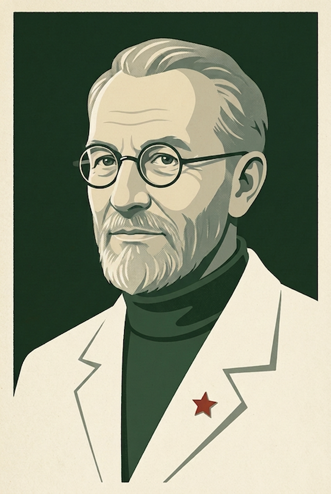

★ ТОВАРИЩ ★
Обучи
машину читать цифры
настоящая нейросеть — прямо в твоём браузере
Сеть
0
I
ЗАГРУЗКА ФОНДА ДАННЫХ
…
подать питание
Нейро-станция
«МНИСТ-1»
система распознавания рукописных цифр
EN
🔊 звук
ожидание
ГОСТ 5.1 · изд. 001 · СССР
Настоящая сеть 784→30→10, собранная с нуля (init · forward · backward · SGD). Обучение и распознавание — по-честному, на реальном MNIST.
Ручной ввод образа
?
Очистка
Образец
Начертите цифру пером. Станция распознаёт справа. До обучения — гадает наугад.
Схема сети
?
схема
числа
+
−
⊞
—
ТЯНИ ДОСКУ · КОЛЕСО = ПАН
ВХОД·784
СКРЫТЫЙ·30
ВЫХОД·10
СИГНАЛ →
← ГРАДИЕНТ
обучение на
—
Распознано
?
ответ
0
✓
Обучение
?
Цикл ×1
Все эпохи
Сброс весов
эпоха
0/30
пакет
—
График ошибки ↓
?
—
Средний квадрат промаха
на обучающей выборке. Каждая эпоха — точка. Чем ниже кривая, тем точнее backprop подогнал веса.
Точность ↑
?
—
Доля верно распознанных
цифр на контрольной выборке — которую сеть при обучении не видела. Честная проверка навыка.
Фонд данных · 50 000 образцов
?
Витрина · 0–9
МНИСТ
— рукописные цифры (NIST, США, 1998). Обучающая выборка 50 000, контрольная 10 000, растр 28×28.
Карта фонда
обработано образцов
Каждая точка — один образец
, всего 50 000. За эпоху станция прочитывает фонд целиком: засветка — прочитанное текущей эпохой.
Скрытый слой · что выучили 30 нейронов
?
Конфигурация · гиперпараметры
?
размер скрытого слоя
30
число скрытых слоёв
1
1
2
3
скорость обучения η
1.0
размер батча
20
число эпох
30
Нейро-станция «МНИСТ-1» · ТУ 784.30.10-86
Основано на книге Майкла Нильсена
«Neural Networks and Deep Learning»
и его работе.
ВЫЧИСЛИТЕЛЬ «АЛДАН-3»
«Понедельник начинается в субботу»
ТАБЕЛЬ ИСПЫТАНИЙ · «МНИСТ-1»
—
—
ЭТАП

тов. Полуэктов
🔊
✕